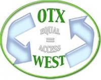

Oakland Technology Exchange West (OTX West)/Marcus A. Foster Educational Institute

Website:
http://www.otxwest.org/ Location:
Oakland, CA
The Marcus A. Foster Educational Institute (MAFEI) Oakland Technology Exchange West project (OTX-W) is a large-scale computer reuse program dedicated to providing high quality, refurbished home computers to families, students and teachers. As reflected in the scope of work and subsequent MOU agreement, MAFEI continues to meet the following objectives for FY 2004-05.
OTX-West is dedicated to eliminating the digital divide in Oakland, California. We do this by refurbishing surplus computers, educating families and providing ongoing access and support to those who have received our computers. The experiences of OTX-West over the past 6 years has demonstrated both the need for home computers in the community and the reuse model as a green way to meet the need.
In today’s world, everyone needs access to computers and the Internet in order to join the new economy. Access to education, health care, government agencies, jobs, and other services are all currently offered through the Internet. This need has many adults feeling like they are too old to learn the tools of the “information age.” This way of thinking, along with the lack of resources in the communities, contributes to the “digital divide” that exits in Oakland.
It is not enough to provide computers, although this is essential. OTX-West provides education that is necessary for those who are getting their computers for the first time. Technical support is also necessary to keep these computers working properly so that the people of Oakland can continue to learn and become a part of the “information age” and not be left behind.
Supported Projects
Program Development
Naomi Jimenez
1/2007 — 1/2008
Naomi’s responsibilities were many and varied. At the beginning of the year, she assisted in the major redesign of our website, www.otxwest.org. Using tools such as Dreamweaver, Photoshop, and others, she added to visual elements as well as rewrote a significant amount of the content and reworked the navigation. Her technical duties consisted of helping to coordinate the installation of labs in schools and community centers. She worked with our network specialists to set up and occasionally maintain labs both in in schools and at community centers in various locations around Oakland. In addition, she often participated in our Tech Support Day, which is the day when recipients of our refurbished computers can come in and have their computers repaired or receive one-on-one instruction. She also assisted in the instruction of both our Take Home Computer Program, as well as four digital storytelling workshops, which varied in length from 2 days to four weeks. She would also occasionally supervise our volunteers.
Naomi enhanced the existing curriculum for our Take Home Computer Program curriculum, adding about 10 additional pages to our training manual, which covers basic computer maintenance and internet safety. She also created various instructional handouts for our digital storytelling classes. She was directly responsible for an increase in the attendance of our Take Home Computer Program by at least 300 students, which is roughly one third more than last year. She also helped upwards of 270 students become confident in the use of multimedia software during our digital storytelling classes. She also increased her technology skills, both software and hardware. She went from having little to no experience using audio and image editing software, to being knowledgeable enough to teach others how to use them. She went from being slightly nervous speaking in front of a group, to being a commanding and effective presence in the classroom.
Although it isn’t particularly specific, Naomi’s digital story “California Dreaming” inspired many students to learn to use the multimedia programs. It never failed to get applause when we played it in class.
Program Development
Jeff Benton
8/2005 — 8/2006
The VISTA would be involved in a variey of activities including assisting and acting as a trainer in our Introductory computer classes for families, and working with volunteers to prepare the home computers that are critical to our community. The member would also be instrumental in building our second classroom, defining and preparing curriculum for delivery in this “high end”, multimedia learning environment. The member would become familiar with and provide assistance in our other areas including our “Cyber High at home” program.
Jeff has taken the lead role in building our second classroom. This was completed the middle of February. Jeff is very effective in identifying what needs to be done and completing it with quality. He is an integral part of all aspects of our home computer program including scheduling and coordinating families in our classes, coordinating the work of adult and youth volunteers, and many, many other things that are needed in a small organization with a big mission.
Jeff has also attended a KQED workshop on digital story telling and is working with Domingo Vaszuez, a multimedia professional, to finalize the curriculum for our upcoming digital story telling pilot workshop. The workshop has been scheduled, 20 students have been selected, and all is a go for the week of Spring Break, April 10-14.
We are currently working with project SOAR to schedule 200-300 7th graders into our summer technology workshop. This one week workshop, for 6 separate sessions, will run from June 26 to August 4. We will be updating our first classroom to also accomodate the students. The curriculum we will use will be that piloted in April. Jeff is involved in every detail of this large, (and new to us) endeavor.
Project Coordinator
Clarice Lovely
9/2004 — 8/2005
The Americorps member serves as a project coordinator, working closely with the Director of Programs in an administrative capacity to coordinate schedules, sites and staff for computer training classes. The Americorps member assists in coordinating presentations to school sites and organizations to register students as part of the program’s existing outreach plan. Americorps members will assess and make recommendations for improving this process. Further, the Americorps member works to increase the organization’s capacity to improve technology literacy among families by serving as a computer training class instructor and assist staff in the development of curriculum and training manuals.
As an Americorps VISTA member, Clarice was an integral part of preparing for the school district’s “back to school registration drive,” at which time, parents and students attend school orientations and register for classes. Through OTX we serve a school district population comprised of 48,000 students and 104 school sites. For the purpose of the home computer component of OTX-West’s computer reuse program, Clarice assisted in the coordination of this effort to reach 41 middle school and high school sites. Her work included creating and organizing information packets, scheduling meetings with school sites and staffing orientations. Due to the extensive outreach effort, we were able to serve 800 middle school and high school students last Fall.
MAFEI currently has six interns representing the traditional high schools in the District, two of whom have returned from the previous year. As an Americorps member, Clarice serves as a liaison with OTX interns, coordinating work schedules and advising them appropriately regarding work responsibilities.
Compters in Home Program Development
Ian Bauer
8/2003 — 8/2004
MAFEI’s OTX-West project is a large-scale computer reuse program, dedicated to providing computer technology access, technical support and volunteer opportunities for Oakland families. Ian Bauer has been working closely with MAFEI/OTX-West staff to meet and exceed workplan objectives as outlined below:
Provide a quality learning experience for both youth and adult volunteers (technical and non-technical) through service learning opportunities at OTX-West.
Provide a relevant, hands-on work experience for youth.
Develop Organization Website
Contribute to Learning Without Boundaries Literacy Initiative
Volunteer Training
Ian Bauer worked with staff and the project consultant funded by CTCNET/ATA to assess the current capacity and need for volunteers. Ian assisted in the development of the volunteer training manual; streamlining the process for coordinating assignments for weekly “Volunteer Days” and “Distribution Days.”
As MAFEI successfully completed the training manual within the projected three-month time period, Ian coordinated the weekly management of both student and adult volunteers who had received computers from OTX-West. To date, approximately 500 student and adults have volunteered at OTX-West including IT students from local vocational programs, high school and middle school students with varying interests in computer technology.
Ian coordinated interns’ weekly tasks—preparing computer labs for trainings, assembling training materials, staffing distribution days. Ian is currently developing a training model whereby interns will be able to successfully conduct computer training courses, having become proficient in basic computer software applications and increased their knowledge of computer equipment and basic hardware operations.
Website Development
MAFEI significantly benefited from Ian’s expertise and interest in website design. Ian increased his responsibilities in this area by successfully upgrading the organization’s website(s) www.mafei.org and www.otxwest.org, including:
• Reformatting website graphics,
• Updating and adding to website text for OTX-West offerings, including technical support information and computer class training on-line registration
• Creating links
• Providing easier navigation of website
Learning Without Boundaries Literacy Initiative
Ian contributed significantly to the development of this project. His role was central and continues to be a vital part of the continuance of this model. A portion of his responsibilities included:
• Researching software writing programs;
• Conducting assessments and creating computer labs in the classroom of 3rd grade teachers participating in this project.
• Developing a training manual for parents and students, integrating key components of the writing software program and Internet research. Students learned how to research topics, find the definition of words and phrases and successfully complete a creative writing assignment (training guide available).
• Conducting computer training classes for third grade students and their families.
Among Ian’s talents and strengths are his ability to quickly identify and resolve problems. As much of this project requires work in diverse communities with limited experience with computer technology, Ian exhibited tremendous patience and support for these families. MAFEI equally appreciated his ability to remain flexible in a changing work environment and meet each task with a great enthusiasm and a keen sense of humor. He was certainly a welcomed addition to our staff.
- supervisor
Related Content
None created yet!